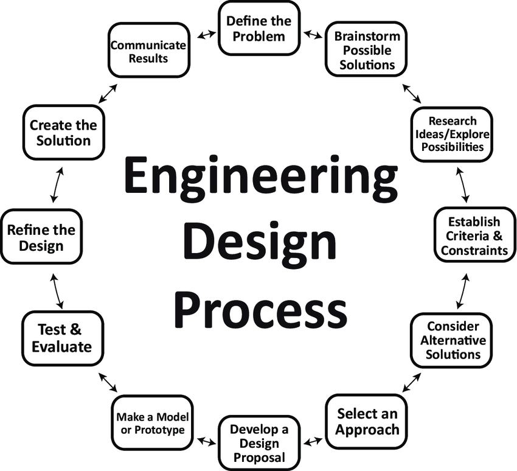

Our Team Standards¶
We have standards that we follow when doing anything and everything for robotics. For Building we follow the Engineering Design Process.
This photo accurately represents the general Engingeering Process, but we can explain it more specifically. During the Research Ideas/Explore Possibilities phase we will look at vexforum.com and reveal videos publicly posted on youtube to see if/what kinds of solutions have been published regarding the problem. During the Make a Model or Prototype phase we will first make a CAD of the idea to figure out the idea completley before spending resources on it. After this we will make the physical prototype.
When programming we follow a routine we created called the Whiteboard Routine
Write what you want to achieve on the whiteboard
Write the general logic for that problem on the whiteboard
Transfer the logic from the whiteboard to PROS and download the code to the robot
Debug the code by logging what it achieves and doesn’t achieve on the whiteboard
Rubberduck the code if needed.
Rewrite any new logic on the whiteboard and then into the program.
Repeat the last two points until the code achieves what we want.